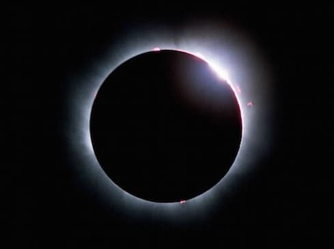

{kind=link}
ওরা তোমাকে নতুন চাঁদের ব্যাপারে জিজ্ঞেস করে। বলো, “এটি মানুষের জন্য নির্দিষ্ট সময়ের হিসেব রাখা এবং হাজ্জের সময় নির্ধারণ করার জন্য।” আর পেছন দিক দিয়ে বাড়িতে প্রবেশ করলে সেটা বেশ ধার্মিকতা হয়ে গেল না। বরং আল্লাহর تعالى প্রতি সাবধান থাকাটাই হচ্ছে আসল ধার্মিকতা। তাই দরজা দিয়ে বাড়িতে প্রবেশ করো, আর আল্লাহর تعالى প্রতি সাবধান থেকো, যেন তোমরা সফল হতে পারো। [আল-বাক্বারাহ ১৮৯]
চাঁদ – এক অসাধারণ সৃষ্টি
আল্লাহ تعالى চাঁদকে বিশেষভাবে সৃষ্টি করেছেন পৃথিবীকে মানুষের বসবাসের জন্য উপযোগী করার জন্য। পৃথিবীর উপরের পৃষ্ঠটি একটি পাতলা খোলসের মতো, যা অনেকগুলো টুকরোতে ভাগ করা। এই টুকরোগুলোকে বলা হয় ‘টেক্টনিক প্লেট’। এই প্লেটগুলো ক্রমাগত নড়াচড়া করে, সম্প্রসারিত হয়, একটা প্লেট অন্য প্লেটের নীচে আটকিয়ে যায় এবং একসময় হঠাৎ করে ছুটে যায়, আর তখন ভুমিকম্প হয়।
চাঁদের আকর্ষণের কারণে পৃথিবীর উপরের স্তর ক্রমাগত টান পড়ে। এর ফলে প্লেট টেকটনিক্স হয়। পৃথিবীতে প্রাণ টিকে থাকার জন্য হাইড্রোজেন, অক্সিজেন, নাইট্রোজেন, ফসফরাস এবং সালফারের ক্রমাগত সরবরাহ দরকার। পৃথিবীর ভেতর থেকে এই প্রয়োজনীয় পদার্থগুলো বেরিয়ে আসে এই প্লেটগুলোর নড়াচড়ার কারণে।[৩৩১] অনেক আগে আদি প্রাণীগুলোর বেঁচে থাকার জন্য যে পুষ্টির দরকার ছিল, তা সরবরাহ করেছিল এই প্লেট টেক্টনিক্স—প্লেটগুলোর ক্রমাগত সম্প্রসারণ, নড়াচড়া এবং ভুমিকম্প।
{kind=link}
যদি চাঁদ না থাকতো, তাহলে প্লেট টেকটনিক্স হতো না, পৃথিবীতে জটিল প্রাণ টিকে থাকতো না, কোনোদিন মানুষ আসতে পারতো না। মানুষকে পাঠানোর জন্য দরকার ছিল চাঁদকে ঠিক এখন যে আকৃতি এবং দূরত্ব দিয়ে রাখা হয়েছে, ঠিক সেভাবেই রাখা।[৩২৬]
চাঁদ হচ্ছে পৃথিবীর স্ট্যাবিলাইজার। এটি পৃথিবীকে নিজের অক্ষের উপর বেশি দোলা থেকে রক্ষা করে। এর টানের কারণে পৃথিবী ঘোরার সময় লাটিমের মতো হেলে দুলে না ঘুরে একই অক্ষের উপর ঘোরে। যদি এরকম না হতো, পৃথিবীতে ঋতুগুলো ভয়ঙ্কর হতো। পৃথিবীর আবহাওয়া খুব দ্রুত চরমভাবে পরিবর্তন হতো। জটিল প্রাণ থাকতে পারতো না। মানুষ তো দূরের ব্যাপার। যেরকম কিনা মঙ্গল গ্রহে হয়েছে। মঙ্গল গ্রহের পৃথিবীর মতো চাঁদ না থাকার কারণে সেখানে আবহাওয়া চরম হয়ে গেছে।[৩২৬]
শুধু তাই না, চাঁদ পৃথিবীর ঘোরার গতিকে নিয়ন্ত্রণ করে। চাঁদের টানে সমুদ্র পৃষ্ঠের পানির ঘর্ষণের কারণে পৃথিবীর ঘোরার গতি নিয়ন্ত্রিত থাকে। চাঁদ না থাকলে এক দিনের দৈর্ঘ্য হতো মাত্র ৬ ঘণ্টা![৩২৭]
চাঁদের কারণে যে পূর্ণ সূর্য গ্রহণ হয়, সেটা একটা বিরাট ব্যাপার। সূর্যের ব্যাস চাঁদের থেকে প্রায় ৪০০গুণ বেশি। যদি সূর্য চাঁদের থেকে প্রায় ৪০০ গুণ দূরে না থাকতো, তাহলে আকাশে সূর্য এবং চাঁদের আকৃতি প্রায় সমান হতো না এবং কোনোদিন পূর্ণ সূর্য গ্রহণ হতো না। সূর্য এবং চাঁদের আকৃতি এবং দূরত্ব এত নিখুঁত অনুপাতে আল্লাহ تعالى রেখেছেন দেখেই পূর্ণ সূর্য গ্রহণের সময় চাঁদ সূর্যকে একদম সঠিক মাপে ঢেকে ফেলে।

চান্দ্র বছর বনাম সৌর বছর
এই আয়াতে আল্লাহ تعالى আমাদেরকে সূর্য নয়, বরং চাঁদ ব্যবহার করে মাস, বছরের হিসেব রাখতে বলেছেন, বিশেষ করে হাজ্জের সময় নির্ধারণ করতে বলেছেন। প্রশ্ন আসে, কেন খ্রিস্টীয় ক্যালেন্ডারের মতো সূর্য ভিত্তিক ক্যালেন্ডার ব্যবহার না করে চাঁদ ভিত্তিক ক্যালেন্ডার ব্যবহার করতে বললেন? দেখা যাক চাঁদ ব্যবহার করার সুবিধাগুলো কী কী—
প্রাচীনকালে মানুষের কাছে সূর্য এবং তারা ব্যবহার করে দিন নির্ধারণ করা কঠিন ছিল। এর জন্য জ্যোতির্বিদ্যায় যথেষ্ট পারদর্শী হতে হতো। তারচেয়ে বরং চাঁদ ব্যবহার করে দিন নির্ধারণ করা অনেক সহজ, কারণ প্রতিদিন চাঁদের আকৃতি পরিবর্তন হয়, যা সূর্যের বেলায় হয় না। একারণে চাঁদ ব্যবহার করলে মানুষের পক্ষে যেকোনো জায়গায়, দুর্গম বনে, ধুধু মরুভূমিতেও দিন-মাস নির্ধারণ করা সম্ভব।[৬]
এছাড়াও আজকে যে গ্রেগরিয়ান ক্যালেন্ডার আমরা সবাই ব্যবহার করি এবং আন্তর্জাতিকভাবে সব দেশে ব্যবহার হচ্ছে, সেটার আসলে কোনো সুস্পষ্ট ভিত্তি নেই। এই ক্যালেন্ডারে কিছু মাস ৩০ দিন, কিছু ৩১ দিন, বছরে এক মাস ২৮/২৯ দিন। মাস যে সব সময় পালা বদল করে ৩০, ৩১ দিনের হয়, তাও না। জুলাই এবং অগাস্ট পর পর দুই মাস ৩১ দিন। এই মাসগুলোর শুরু এবং শেষ কবে হবে, তা আকাশ দেখে সহজে বলাও সম্ভব নয়।[৩৩০] এমনকি বছরের নির্দিষ্ট কিছু মাসে যে সবসময় নির্দিষ্ট কিছু ঋতু শুরু বা শেষ হয়, সেটাও না। শীত, বর্ষা কাল প্রায়ই এক মাস আগে পরে হয়। এছাড়াও এই ক্যালেন্ডার নিখুঁত নয়। প্রতি চার বছর একদিন যোগ করে লিপ ইয়ার করতে হয়।
তবে ইসলামিক ক্যালেন্ডার যে ঠিক চান্দ্র ক্যালেন্ডার সেটাও নয়। চান্দ্র ক্যালেন্ডার নির্ধারণ করা হয় জ্যোতির্বিদ্যা গাণিতিক হিসেব করে, নতুন চাঁদের উদয় পর্যবেক্ষণ করে নয়। যেমন চান্দ্র মাস হয় ২৯ বা ৩০ দিনে, সাধারণত পালা বদল করে। এভাবে ১২ মাসে ৩৫৪.৩৭ দিন হয়। কিন্তু ইসলামিক ক্যালেন্ডারে কোনো মাস ২৯ দিন না ৩০ দিন হবে, তা নির্ভর করে নির্ভরযোগ্যভাবে নতুন চাঁদ ওঠা দেখে। যদি ২৯তম দিনে নতুন চাঁদ খালি চোখে দেখা না যায়, তাহলে সূর্যাস্তের পর ৩০তম দিন শুরু হয়। চাঁদ পর্যবেক্ষণের প্রতি মুসলিমদের এত গুরুত্ব দেওয়ার কারণেই প্রাচীনকাল থেকেই মুসলিমদের মধ্যে জ্যোতির্বিদ্যার প্রতি আগ্রহ ছিল, যা এক সময় মুসলিমদেরকে সারা পৃথিবীতে জ্যোতির্বিদ্যায় শিখরে নিয়ে গিয়েছিল।[৩২৯]
খালি চোখে চাঁদ দেখেই মাস শুরু করতে হবে, না কি হিসেব করে আগে থেকেই মাসের শুরু এবং শেষ নির্ধারণ করে আগাম ক্যালেন্ডার তৈরি করা যাবে, এনিয়ে উলামাদের মধ্যে ব্যাপক মতপার্থক্য রয়েছে। একপক্ষের দাবি: যেহেতু রাসুল عليه السلام আমাদেরকে চাঁদ দেখেই মাস শুরু করতে বলেছেন, তাই আমাদেরকে এখনো তাই করতে হবে, না করলে বড় পাপ হবে। আরেক পক্ষের দাবি: রাসুল عليه السلام এর যুগে সেটাই স্বাভাবিক ছিল, কারণ তখন মুসলিম জাতির পক্ষে হিসেব করে বের করার মতো জ্ঞান এবং প্রযুক্তি ছিল না। এখন আমরা প্রযুক্তিতে, জ্যোতির্বিদ্যায় অনেক অগ্রসর হয়েছি। এখন আমাদের পক্ষে আগে থেকেই হিসেব করে চান্দ্র মাসের শুরু বের করা সম্ভব, কারণ চাঁদ-পৃথিবী-সূর্য কখন এক বিশেষ রেখায় আসবে, যার ফলে নতুন চাঁদ পৃথিবীর কোন অংশে দেখা যাবে এবং কোন অংশে দেখা যাবে না, সেটা এখন আমরা হিসেব করেই বের করতে পারি।[৩২৮]
রমজান মাসের সেহেরির সময় শেষ হলো কিনা, তা হিসেব করার জন্য আমাদেরকে আকাশে আলো-আধার রেখার পার্থক্য দেখতে বলা হয়েছে। আমরা কি সেটা করি, নাকি ঘড়ি ব্যবহার করে নির্দিষ্ট ঘণ্টা-মিনিটে সেহরি শেষ করি? ইফতার খাওয়ার সময় বুঝতে কি আমরা সূর্য সত্যিই অস্ত গেছে কিনা দেখি, নাকি ঘড়ি ব্যবহার করি? যারা এখনো নিজের চোখে দেখে করেন, মেঘলা দিনে তারা কি করেন?—এসব ব্যাপারে আমরা যখন জ্যোতির্বিদ্যার হিসেব অনুসারে চলছি, তখন চান্দ্র মাসের হিসেব কেন জ্যোতির্বিদ্যার হিসেব অনুসারে করা যাবে না, যা কিনা সারা পৃথিবীতে মুসলিমদের মধ্যে ঐক্য এনে দেবে? কেন আমরা এখনো চাঁদ খালি চোখে দেখার উপর নির্ভর করবো, যা আমাদের মধ্যে ব্যাপক অনৈক্য, ঝগড়াঝাঁটি তৈরি করেছে?[৩২৮]
মিশরের ক্বাদি আহমেদ মুহাম্মাদ শাকির এবং ইউসুফ আল-কারাদায়ী জ্যোতির্বিদ্যার হিসেব করে ইসলামিক ক্যালেন্ডারের প্রতিটি মাসের শুরু নির্ধারণ করা সমর্থন করেছেন যথাক্রমে ১৯৩৯ এবং ২০০৪ সালে। সৌদি আরব আনুষ্ঠানিক কাজে গাণিতিক ইসলামিক ক্যালেন্ডার “উম্ম আল-ক্বুরা” ব্যবহার করলেও, ধর্মীয় দিনগুলো যেমন ঈদের দিন, হাজ্জের দিন নির্ধারণে এখনো খালি চোখে চাঁদ পর্যবেক্ষণ করে। ২০০৭ সালে ইসলামিক সোসাইটি অফ নর্থ আমেরিকা এবং ইউরোপিয়ান কাউন্সিল ফর ফাতয়া এন্ড রিসার্চ উম্ম আল-ক্বুরা’র হিসেব ব্যবহার করা শুরু করেছে। যার ফলে অনেক মুসলিম দেশগুলোতে একই ইসলামিক ক্যালেন্ডার ব্যবহার করতে ঐক্যবদ্ধ হওয়ার সূচনা হয়েছে।[৩২৯]
আর পেছন দিক দিয়ে বাড়িতে প্রবেশ করলে সেটা বেশ ধার্মিকতা হয়ে গেল না
প্রাচীন আরবে একটা প্রথা ছিল যে, তারা যখন একবার ইহরাম বাধত, তারপর তারা আকাশ আর তার মাঝে বাড়ির ছাদ আসতে দেওয়াটাকে ইহরামের পরিপন্থী মনে করতো। একারণে ইহরামের সময় কোনো কিছুর প্রয়োজনে বাড়িতে আসতে হলে, বাড়ির সদর দরজা দিয়ে প্রবেশ না করে, পেছন দিয়ে দেওয়াল টপকিয়ে বাড়িতে ঢুকত। আল্লাহ تعالى এই আয়াতে বলছেন যে, তাঁকে تعالى খুশি করার এইসব মনগড়া ধারণা তিনি সমর্থন করেন না। তাঁকে কীভাবে খুশি করতে হবে, সেটা তিনি নিজেই পরিষ্কারভাবে দেখিয়ে দিয়েছেন। এর বাইরে আমাদের উর্বর মস্তিষ্ক থেকে কোনো কিছু বের হলে সেটা বিদআহ। আর এই সব আনুষ্ঠানিকতার মূল্য তাঁর تعالى কাছে নেই। তিনি تعالى শুধু দেখেন মানুষের তাকওয়া।
তাকওয়া কী?
ধরুন, আপনি প্রতিদিন কী করেন, সেটা নিয়ে একটা ‘রিয়েলিটি টিভি শো’ বানানো হচ্ছে। আপনার বাসার সবগুলো রুমে ক্যামেরা বসানো হয়েছে। আপনি ঘুম থেকে ওঠার পর ঘুমোতে যাওয়া পর্যন্ত সবসময় আপনার সাথে একজন ক্যামেরাম্যান আপনার দিকে ক্যামেরা তাক করে রেখেছে। আপনি কী বলছেন, কী করছেন, কী খাচ্ছেন, কী দেখছেন, সবকিছু প্রতি মুহূর্তে রেকর্ড করা হচ্ছে। কল্পনা করুন, যদি এরকম কোনো ঘটনা ঘটে তাহলে আপনার মানসিক অবস্থা কী হবে? আপনি প্রতিটা কথা বলার আগে চিন্তা করবেন যে, আপনার কথাগুলো মার্জিত হচ্ছে কি না, আপনার হাঁটার ধরন ঠিক আছে কি না, আপনি উল্টোপাল্টা দিকে তাকালে সেটা আবার রেকর্ড হয়ে গেলো কি না। আপনি টিভিতে যেসব হিন্দি সিরিয়াল, বিজ্ঞাপন, মুভি দেখেন, যেসব গান শুনেন, ইন্টারনেটে যে সব সাইট ঘুরে বেড়ান, সেগুলো ক্যামেরায় রেকর্ড হয়ে গেলে লোকজনের কাছে মান-সন্মান থাকবে কি না। এই যে ক্যামেরাম্যানের প্রতি আপনার চরম সচেতনতা, এটাই তাকওয়া। আল্লাহর تعالى প্রতি আপনার ঠিক একই ধরনের সচেতনতা থাকার কথা।
আর আল্লাহর تعالى প্রতি সাবধান থাকো, যেন তোমরা সফল হতে পারো
আল্লাহ تعالى এই আয়াতে বলছেন, যদি আমরা আল্লাহর تعالى প্রতি সবসময় সাবধান থাকি, তাহলে تُفْلِحُونَ — তোমরা সফল হবে। কু’রআনে সফলতা বোঝানোর জন্য তুফ্লিহুন, মুফ্লিহুন শব্দগুলো ব্যবহার করা হয়। এগুলো এসেছে فَلاّح ফাল্লাহ থেকে, যার অর্থ কৃষক বা চাষি। কৃষক তার কাজের প্রতিদান সপ্তাহে বা মাসে একবার পায় না। সে দীর্ঘ পরিশ্রম করে জমি চাষ করার পর আশা নিয়ে বুক বেধে থাকে যে, একদিন ভালো ফলন হবে। কৃষক জানে যে, সে নিজে শুধু পরিশ্রম করলেই হবে না। তার আল্লাহর تعالى অনুগ্রহ দরকার—ঠিকমত রোদ এবং যথেষ্ট বৃষ্টি দরকার। না হলে তার এত পরিশ্রম সব বিফলে যাবে। আল্লাহ تعالى এখানে تُفْلِحُونَ তুফ্লিহুন শব্দটি ব্যবহার করে মুত্তাকীদেরকে পরিষ্কার করে জানিয়ে দিচ্ছেন যে, তাদের জীবনটা মোটেও সহজ হবে না। তাদেরকে যদি জান্নাত পেতে হয়, তাহলে তাদেরকে যথেষ্ট পরিশ্রম করতে হবে এবং শুধু পরিশ্রম করলেই হবে না, আল্লাহর تعالى অনুগ্রহ না পেলে তাদের সব পরিশ্রম বিফলে যাবে। এভাবে তারা লম্বা পরিশ্রম করার পর একদিন গিয়ে বিরাট প্রতিদান পাবে। তাই মুত্তাকীদেরকে কৃষকদের মতো ধৈর্য ধরতে হবে, একটানা পরিশ্রম করে যেতে হবে এবং আল্লাহর تعالى অনুগ্রহের উপর নির্ভর করতে হবে। একারণেই আল্লাহ تعالى সবচেয়ে উপযুক্ত তুফ্লিহুন শব্দটি ব্যবহার করেছেন।
সূত্র:
- [১] নওমান আলি খানের সূরা আল-বাকারাহ এর উপর লেকচার এবং বাইয়িনাহ এর কু’রআনের তাফসীর।
- [২] ম্যাসেজ অফ দা কু’রআন — মুহাম্মাদ আসাদ।
- [৩] তাফহিমুল কু’রআন — মাওলানা মাওদুদি।
- [৪] মা’রিফুল কু’রআন — মুফতি শাফি উসমানী।
- [৫] মুহাম্মাদ মোহার আলি — A Word for Word Meaning of The Quran
- [৬] সৈয়দ কুতব — In the Shade of the Quran
- [৭] তাদাব্বুরে কু’রআন – আমিন আহসান ইসলাহি।
- [৮] তাফসিরে তাওযীহুল কু’রআন — মুফতি তাক্বি উসমানী।
- [৯] বায়ান আল কু’রআন — ড: ইসরার আহমেদ।
- [১০] তাফসীর উল কু’রআন — মাওলানা আব্দুল মাজিদ দারিয়াবাদি
- [১১] কু’রআন তাফসীর — আব্দুর রাহিম আস-সারানবি
- [১২] আত-তাবারি-এর তাফসীরের অনুবাদ।
- [১৩] তাফসির ইবন আব্বাস।
- [১৪] তাফসির আল কুরতুবি।
- [১৫] তাফসির আল জালালাইন।
- [১৬] লুঘাতুল কুরআন — গুলাম আহমেদ পারভেজ।
- [৩২৬] Astrobiology Magazine,. (2007). If We Had No Moon – Astrobiology Magazine. Retrieved 18 September 2015, from http://www.astrobio.net/topic/exploration/moon-to-mars/if-we-had-no-moon/
- [৩২৭] Masters, K. (2015). What would happen if we did not have a Moon? (Intermediate) – Curious About Astronomy? Ask an Astronomer. Curious.astro.cornell.edu. Retrieved 18 September 2015, from http://curious.astro.cornell.edu/our-solar-system/37-our-solar-system/the-moon/the-moon-and-the-earth/149-what-would-happen-if-we-did-not-have-a-moon-intermediate
- [৩২৮] Moonsighting.com,. (2015). Global Hijri Calendar. Retrieved 18 September 2015, from http://moonsighting.com/globalcalendar.html
- [৩২৯] Wikipedia,. (2015). Islamic calendar. Retrieved 18 September 2015, from https://en.wikipedia.org/wiki/Islamic_calendar
- [৩৩০] Islamqa.info,. (2015). The reason why Ramadan changes every year in relation to the Gregorian calendar – islamqa.info. Retrieved 18 September 2015, from http://islamqa.info/en/170701
- [৩৩১] Pullen, L. (2009). Plate Tectonics Could be Essential for Life – Astrobiology Magazine. Astrobiology Magazine. Retrieved 19 September 2015, from http://www.astrobio.net/news-exclusive/plate-tectonics-could-be-essential-for-life/